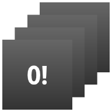

In this document
- The Basics
- Declaring an App Widget in the Manifest
- Adding the AppWidgetProviderInfo Metadata
- Creating the App Widget Layout
- Using the AppWidgetProvider Class
- Creating an App Widget Configuration Activity
- Setting a Preview Image
- Enabling App Widgets on the Lockscreen
- Using App Widgets with Collections
Key classes
App Widgets are miniature application views that can be embedded in other applications (such as the Home screen) and receive periodic updates. These views are referred to as Widgets in the user interface, and you can publish one with an App Widget provider. An application component that is able to hold other App Widgets is called an App Widget host. The screenshot below shows the Music App Widget.
This document describes how to publish an App Widget using an App Widget
provider. For a discussion of creating your own AppWidgetHost
to host app widgets, see
App Widget Host.
Widget Design
For information about how to design your app widget, read the Widgets design guide.
The Basics
To create an App Widget, you need the following:
AppWidgetProviderInfoobject- Describes the metadata for an App Widget, such as the App Widget's layout, update frequency, and the AppWidgetProvider class. This should be defined in XML.
AppWidgetProviderclass implementation- Defines the basic methods that allow you to programmatically interface with the App Widget, based on broadcast events. Through it, you will receive broadcasts when the App Widget is updated, enabled, disabled and deleted.
- View layout
- Defines the initial layout for the App Widget, defined in XML.
Additionally, you can implement an App Widget configuration Activity. This is
an optional
Activity that launches when the user adds your App Widget
and allows him or her
to modify App Widget settings at create-time.
The following sections describe how to set up each of these components.
Declaring an App Widget in the Manifest
First, declare the AppWidgetProvider class in your
application's
AndroidManifest.xml file. For example:
<receiver android:name="ExampleAppWidgetProvider" >
<intent-filter>
<action android:name="android.appwidget.action.APPWIDGET_UPDATE" />
</intent-filter>
<meta-data android:name="android.appwidget.provider"
android:resource="@xml/example_appwidget_info" />
</receiver>
The <receiver> element requires the
android:name
attribute, which specifies the AppWidgetProvider used
by the App Widget.
The <intent-filter> element must include an
<action>
element with the android:name attribute. This attribute specifies
that the AppWidgetProvider accepts the ACTION_APPWIDGET_UPDATE broadcast.
This is the only broadcast that you must explicitly declare. The AppWidgetManager
automatically sends all other App Widget broadcasts to the AppWidgetProvider as
necessary.
The <meta-data> element specifies the
AppWidgetProviderInfo resource and requires the
following attributes:
android:name- Specifies the metadata name. Useandroid.appwidget.providerto identify the data as theAppWidgetProviderInfodescriptor.android:resource- Specifies theAppWidgetProviderInforesource location.
Adding the AppWidgetProviderInfo Metadata
The AppWidgetProviderInfo defines the essential
qualities of an App Widget, such as its minimum layout dimensions, its initial
layout resource,
how often to update the App Widget, and (optionally) a configuration Activity to
launch at create-time.
Define the AppWidgetProviderInfo object in an XML resource using a single
<appwidget-provider> element and save it in the project's
res/xml/
folder.
For example:
<appwidget-provider xmlns:android="http://schemas.android.com/apk/res/android"
android:minWidth="40dp"
android:minHeight="40dp"
android:updatePeriodMillis="86400000"
android:previewImage="@drawable/preview"
android:initialLayout="@layout/example_appwidget"
android:configure="com.example.android.ExampleAppWidgetConfigure"
android:resizeMode="horizontal|vertical"
android:widgetCategory="home_screen|keyguard"
android:initialKeyguardLayout="@layout/example_keyguard">
</appwidget-provider>
Here's a summary of the <appwidget-provider> attributes:
- The values for the
minWidthandminHeightattributes specify the minimum amount of space the App Widget consumes by default. The default Home screen positions App Widgets in its window based on a grid of cells that have a defined height and width. If the values for an App Widget's minimum width or height don't match the dimensions of the cells, then the App Widget dimensions round up to the nearest cell size.See the App Widget Design Guidelines for more information on sizing your App Widgets.
Note: To make your app widget portable across devices, your app widget's minimum size should never be larger than 4 x 4 cells.
- The
minResizeWidthandminResizeHeightattributes specify the App Widget's absolute minimum size. These values should specify the size below which the App Widget would be illegible or otherwise unusable. Using these attributes allows the user to resize the widget to a size that may be smaller than the default widget size defined by theminWidthandminHeightattributes. Introduced in Android 3.1.See the App Widget Design Guidelines for more information on sizing your App Widgets.
- The
updatePeriodMillisattribute defines how often the App Widget framework should request an update from theAppWidgetProviderby calling theonUpdate()callback method. The actual update is not guaranteed to occur exactly on time with this value and we suggest updating as infrequently as possible—perhaps no more than once an hour to conserve the battery. You might also allow the user to adjust the frequency in a configuration—some people might want a stock ticker to update every 15 minutes, or maybe only four times a day.Note: If the device is asleep when it is time for an update (as defined by
updatePeriodMillis), then the device will wake up in order to perform the update. If you don't update more than once per hour, this probably won't cause significant problems for the battery life. If, however, you need to update more frequently and/or you do not need to update while the device is asleep, then you can instead perform updates based on an alarm that will not wake the device. To do so, set an alarm with an Intent that your AppWidgetProvider receives, using theAlarmManager. Set the alarm type to eitherELAPSED_REALTIMEorRTC, which will only deliver the alarm when the device is awake. Then setupdatePeriodMillisto zero ("0"). - The
initialLayoutattribute points to the layout resource that defines the App Widget layout. - The
configureattribute defines theActivityto launch when the user adds the App Widget, in order for him or her to configure App Widget properties. This is optional (read Creating an App Widget Configuration Activity below). - The
previewImageattribute specifies a preview of what the app widget will look like after it's configured, which the user sees when selecting the app widget. If not supplied, the user instead sees your application's launcher icon. This field corresponds to theandroid:previewImageattribute in the<receiver>element in theAndroidManifest.xmlfile. For more discussion of usingpreviewImage, see Setting a Preview Image. Introduced in Android 3.0. - The
autoAdvanceViewIdattribute specifies the view ID of the app widget subview that should be auto-advanced by the widget's host. Introduced in Android 3.0. - The
resizeModeattribute specifies the rules by which a widget can be resized. You use this attribute to make homescreen widgets resizeable—horizontally, vertically, or on both axes. Users touch-hold a widget to show its resize handles, then drag the horizontal and/or vertical handles to change the size on the layout grid. Values for theresizeModeattribute include "horizontal", "vertical", and "none". To declare a widget as resizeable horizontally and vertically, supply the value "horizontal|vertical". Introduced in Android 3.1. - The
minResizeHeightattribute specifies the minimum height (in dps) to which the widget can be resized. This field has no effect if it is greater thanminHeightor if vertical resizing isn't enabled (seeresizeMode). Introduced in Android 4.0. - The
minResizeWidthattribute specifies the minimum width (in dps) to which the widget can be resized. This field has no effect if it is greater thanminWidthor if horizontal resizing isn't enabled (seeresizeMode). Introduced in Android 4.0. - The
widgetCategoryattribute declares whether your App Widget can be displayed on the home screen, the lock screen (keyguard), or both. Values for this attribute include "home_screen" and "keyguard". A widget that is displayed on both needs to ensure that it follows the design guidelines for both widget classes. For more information, see Enabling App Widgets on the Lockscreen. The default value is "home_screen". Introduced in Android 4.2. - The
initialKeyguardLayoutattribute points to the layout resource that defines the lock screen App Widget layout. This works the same way as theandroid:initialLayout, in that it provides a layout that can appear immediately until your app widget is initialized and able to update the layout. Introduced in Android 4.2.
See the AppWidgetProviderInfo class for more
information on the
attributes accepted by the <appwidget-provider> element.
Creating the App Widget Layout
You must define an initial layout for your App Widget in XML and save it in
the project's
res/layout/ directory. You can design your App Widget using the
View objects listed
below, but before you begin designing your App Widget, please read and
understand the
App Widget
Design
Guidelines.
Creating the App Widget layout is simple if you're
familiar with Layouts.
However, you must be aware that App Widget layouts are based on RemoteViews,
which do not support every kind of layout or view widget.
A RemoteViews object (and, consequently, an App Widget) can support the following layout classes:
And the following widget classes:
AnalogClockButtonChronometerImageButtonImageViewProgressBarTextViewViewFlipperListViewGridViewStackViewAdapterViewFlipper
Descendants of these classes are not supported.
RemoteViews also supports ViewStub, which is an invisible, zero-sized View you can use
to lazily inflate layout resources at runtime.
Adding margins to App Widgets
Widgets should not generally extend to screen edges and should not visually be flush with other widgets, so you should add margins on all sides around your widget frame.
As of Android 4.0, app widgets are automatically given padding between the widget frame and the app widget's bounding box to provide better alignment with other widgets and icons on the user's home screen. To take advantage of this strongly recommended behavior, set your application's targetSdkVersion to 14 or greater.
It's easy to write a single layout that has custom margins applied for earlier versions of the platform, and has no extra margins for Android 4.0 and greater:
- Set your application's
targetSdkVersionto 14 or greater. - Create a layout such as the one below, that references a dimension resource for its margins:
<FrameLayout android:layout_width="match_parent" android:layout_height="match_parent" android:padding="@dimen/widget_margin"> <LinearLayout android:layout_width="match_parent" android:layout_height="match_parent" android:orientation="horizontal" android:background="@drawable/my_widget_background"> … </LinearLayout> </FrameLayout> - Create two dimensions resources, one in
res/values/to provide the pre-Android 4.0 custom margins, and one inres/values-v14/to provide no extra padding for Android 4.0 widgets:res/values/dimens.xml:
<dimen name="widget_margin">8dp</dimen>
res/values-v14/dimens.xml:
<dimen name="widget_margin">0dp</dimen>
Another option is to simply build extra margins into your nine-patch background assets by default, and provide different nine-patches with no margins for API level 14 or later.
Using the AppWidgetProvider Class
You must declare your AppWidgetProvider class implementation as a
broadcast receiver
using the <receiver> element in the AndroidManifest (see
Declaring an App Widget in the Manifest above).
The AppWidgetProvider class extends
BroadcastReceiver as a convenience
class to handle the App Widget broadcasts. The AppWidgetProvider receives only
the event broadcasts that
are relevant to the App Widget, such as when the App Widget is updated, deleted,
enabled, and disabled.
When these broadcast events occur, the AppWidgetProvider receives the following
method calls:
-
onUpdate() - This is called to update the App Widget at intervals defined by the
updatePeriodMillisattribute in the AppWidgetProviderInfo (see Adding the AppWidgetProviderInfo Metadata above). This method is also called when the user adds the App Widget, so it should perform the essential setup, such as define event handlers for Views and start a temporaryService, if necessary. However, if you have declared a configuration Activity, this method is not called when the user adds the App Widget, but is called for the subsequent updates. It is the responsibility of the configuration Activity to perform the first update when configuration is done. (See Creating an App Widget Configuration Activity below.) -
onAppWidgetOptionsChanged() -
This is called when the widget is first placed and any time the widget is resized. You can use this callback to show or hide content based on the widget's size ranges. You get the size ranges by calling
getAppWidgetOptions(), which returns aBundlethat includes the following:
OPTION_APPWIDGET_MIN_WIDTH—Contains the lower bound on the current width, in dp units, of a widget instance.OPTION_APPWIDGET_MIN_HEIGHT—Contains the lower bound on the current height, in dp units, of a widget instance.OPTION_APPWIDGET_MAX_WIDTH—Contains the upper bound on the current width, in dp units, of a widget instance.OPTION_APPWIDGET_MAX_HEIGHT—Contains the upper bound on the current width, in dp units, of a widget instance.
onDeleted(Context, int[])- This is called every time an App Widget is deleted from the App Widget host.
onEnabled(Context)- This is called when an instance the App Widget is created for the first time. For example, if the user adds two instances of your App Widget, this is only called the first time. If you need to open a new database or perform other setup that only needs to occur once for all App Widget instances, then this is a good place to do it.
onDisabled(Context)- This is called when the last instance of your App Widget is deleted from
the App Widget host.
This is where you should clean up any work done in
onEnabled(Context), such as delete a temporary database. onReceive(Context, Intent)- This is called for every broadcast and before each of the above callback methods. You normally don't need to implement this method because the default AppWidgetProvider implementation filters all App Widget broadcasts and calls the above methods as appropriate.
The most important AppWidgetProvider callback is
onUpdate()
because it is called when
each App Widget is added to a host (unless you use a configuration Activity). If
your App Widget accepts any user interaction events, then you need to register
the event handlers in this callback. If your App Widget doesn't create temporary
files or databases, or perform other work that requires clean-up, then
onUpdate()
may be the only callback
method you need to define. For example, if you want an App Widget with a button
that launches an Activity when clicked, you could use the following
implementation of AppWidgetProvider:
public class ExampleAppWidgetProvider extends AppWidgetProvider {
public void onUpdate(Context context, AppWidgetManager appWidgetManager, int[] appWidgetIds) {
final int N = appWidgetIds.length;
// Perform this loop procedure for each App Widget that belongs to this provider
for (int i=0; i<N; i++) {
int appWidgetId = appWidgetIds[i];
// Create an Intent to launch ExampleActivity
Intent intent = new Intent(context, ExampleActivity.class);
PendingIntent pendingIntent = PendingIntent.getActivity(context, 0, intent, 0);
// Get the layout for the App Widget and attach an on-click listener
// to the button
RemoteViews views = new RemoteViews(context.getPackageName(), R.layout.appwidget_provider_layout);
views.setOnClickPendingIntent(R.id.button, pendingIntent);
// Tell the AppWidgetManager to perform an update on the current app widget
appWidgetManager.updateAppWidget(appWidgetId, views);
}
}
}
This AppWidgetProvider defines only the
onUpdate()
method for the purpose of
defining a PendingIntent that launches an Activity and attaching it to the App Widget's button with setOnClickPendingIntent(int, PendingIntent). Notice
that it includes a loop that iterates through each entry in
appWidgetIds, which is an array of IDs that identify each App
Widget created by this provider. In this way, if the user creates more than one
instance of the App Widget, then they are all updated simultaneously. However,
only one updatePeriodMillis schedule will be managed for all
instances of the App Widget. For example, if the update schedule is defined to
be every two hours, and a second instance of the App Widget is added one hour
after the first one, then they will both be updated on the period defined by the
first one and the second update period will be ignored (they'll both be updated
every two hours, not every hour).
Note: Because AppWidgetProvider is an extension of BroadcastReceiver, your process is not guaranteed to keep
running after the callback methods return (see BroadcastReceiver for information about the broadcast
lifecycle). If your App Widget setup process can take several seconds (perhaps
while performing web requests) and you require that your process continues,
consider starting a Service in the
onUpdate()
method. From within the Service, you can perform your own updates
to the App Widget without worrying about the AppWidgetProvider closing down due
to an Application
Not Responding (ANR) error. See the Wiktionary sample's AppWidgetProvider for an example of an App Widget running a Service.
Also see the ExampleAppWidgetProvider.java sample class.
Receiving App Widget broadcast Intents
AppWidgetProvider is just a convenience class. If
you would like
to receive the App Widget broadcasts directly, you can implement your own
BroadcastReceiver or override the
onReceive(Context, Intent) callback.
The Intents you need to care about are as follows:
ACTION_APPWIDGET_UPDATEACTION_APPWIDGET_DELETEDACTION_APPWIDGET_ENABLEDACTION_APPWIDGET_DISABLEDACTION_APPWIDGET_OPTIONS_CHANGED
Creating an App Widget Configuration Activity
If you would like the user to configure settings when he or she adds a new
App Widget,
you can create an App Widget configuration Activity. This Activity
will be automatically launched by the App Widget host and allows the user to
configure
available settings for the App Widget at create-time, such as the App Widget
color, size,
update period or other functionality settings.
The configuration Activity should be declared as a normal Activity in the
Android manifest file.
However, it will be launched by the App Widget host with the ACTION_APPWIDGET_CONFIGURE action,
so the Activity needs to accept this Intent. For example:
<activity android:name=".ExampleAppWidgetConfigure">
<intent-filter>
<action android:name="android.appwidget.action.APPWIDGET_CONFIGURE"/>
</intent-filter>
</activity>
Also, the Activity must be declared in the AppWidgetProviderInfo XML file,
with the
android:configure attribute (see Adding
the AppWidgetProviderInfo Metadata above). For example, the configuration
Activity
can be declared like this:
<appwidget-provider xmlns:android="http://schemas.android.com/apk/res/android"
...
android:configure="com.example.android.ExampleAppWidgetConfigure"
... >
</appwidget-provider>
Notice that the Activity is declared with a fully-qualified namespace, because it will be referenced from outside your package scope.
That's all you need to get started with a configuration Activity. Now all you need is the actual Activity. There are, however, two important things to remember when you implement the Activity:
- The App Widget host calls the configuration Activity and the configuration
Activity should always
return a result. The result should include the App Widget ID
passed by the Intent that launched the Activity (saved in the Intent extras
as
EXTRA_APPWIDGET_ID). - The
onUpdate()method will not be called when the App Widget is created (the system will not send the ACTION_APPWIDGET_UPDATE broadcast when a configuration Activity is launched). It is the responsibility of the configuration Activity to request an update from the AppWidgetManager when the App Widget is first created. However,onUpdate()will be called for subsequent updates—it is only skipped the first time.
See the code snippets in the following section for an example of how to return a result from the configuration and update the App Widget.
Updating the App Widget from the configuration Activity
When an App Widget uses a configuration Activity, it is the responsibility of
the Activity
to update the App Widget when configuration is complete.
You can do so by requesting an update directly from the
AppWidgetManager.
Here's a summary of the procedure to properly update the App Widget and close the configuration Activity:
- First, get the App Widget ID from the Intent that launched the Activity:
Intent intent = getIntent(); Bundle extras = intent.getExtras(); if (extras != null) { mAppWidgetId = extras.getInt( AppWidgetManager.EXTRA_APPWIDGET_ID, AppWidgetManager.INVALID_APPWIDGET_ID); } - Perform your App Widget configuration.
- When the configuration is complete, get an instance of the
AppWidgetManager by calling
getInstance(Context):AppWidgetManager appWidgetManager = AppWidgetManager.getInstance(context);
- Update the App Widget with a
RemoteViewslayout by callingupdateAppWidget(int, RemoteViews):RemoteViews views = new RemoteViews(context.getPackageName(), R.layout.example_appwidget); appWidgetManager.updateAppWidget(mAppWidgetId, views);
- Finally, create the return Intent, set it with the Activity result, and finish the Activity:
Intent resultValue = new Intent(); resultValue.putExtra(AppWidgetManager.EXTRA_APPWIDGET_ID, mAppWidgetId); setResult(RESULT_OK, resultValue); finish();
Tip: When your configuration Activity first opens, set the Activity result to RESULT_CANCELED. This way, if the user backs-out of the Activity before reaching the end, the App Widget host is notified that the configuration was cancelled and the App Widget will not be added.
See the ExampleAppWidgetConfigure.java sample class in ApiDemos for an example.
Setting a Preview Image
Android 3.0 introduces the previewImage field, which specifies a
preview of what the app widget looks like. This preview is shown to the user from the
widget picker. If this field is not supplied, the app widget's icon is used for
the preview.
This is how you specify this setting in XML:
<appwidget-provider xmlns:android="http://schemas.android.com/apk/res/android" ... android:previewImage="@drawable/preview"> </appwidget-provider>
To help create a preview image for your app widget (to specify in the previewImage field), the Android
emulator includes an application called "Widget Preview." To create a
preview image, launch this application, select the app widget for your
application and set it up how you'd like your preview image to appear, then save
it and place it in your application's drawable resources.
Enabling App Widgets on the Lockscreen
Android 4.2 introduces the ability for users to add widgets to the lock screen. To indicate that your app widget is available for use on the lock screen, declare the android:widgetCategory attribute in the XML file that specifies your AppWidgetProviderInfo. This attribute supports two values: "home_screen" and "keyguard". An app widget can declare support for one or both.
By default, every app widget supports placement on the Home screen, so "home_screen" is the default value for the
android:widgetCategory attribute. If you want your app widget to be available for the lock screen, add the "keyguard" value:
<appwidget-provider xmlns:android="http://schemas.android.com/apk/res/android" ... android:widgetCategory="keyguard|home_screen"> </appwidget-provider>
If you declare a widget to be displayable on both keyguard (lockscreen) and home, it's likely that you'll want to customize the widget depending on where it is displayed. For example, you might create a separate layout file for keyguard vs. home. The next step is to detect the widget category at runtime and respond accordingly.
You can detect whether your widget is on the lockscreen or home screen by calling
getAppWidgetOptions()
to get the widget's options as a Bundle. The returned bundle will include the key
OPTION_APPWIDGET_HOST_CATEGORY, whose value will be one of WIDGET_CATEGORY_HOME_SCREEN or
WIDGET_CATEGORY_KEYGUARD. This value is determined by the host into which the widget is bound. In the AppWidgetProvider, you can then check the widget's category, for example:
AppWidgetManager appWidgetManager; int widgetId; Bundle myOptions = appWidgetManager.getAppWidgetOptions (widgetId); // Get the value of OPTION_APPWIDGET_HOST_CATEGORY int category = myOptions.getInt(AppWidgetManager.OPTION_APPWIDGET_HOST_CATEGORY, -1); // If the value is WIDGET_CATEGORY_KEYGUARD, it's a lockscreen widget boolean isKeyguard = category == AppWidgetProviderInfo.WIDGET_CATEGORY_KEYGUARD;
Once you know the widget's category, you can optionally load a different base layout, set different properties, and so on. For example:
int baseLayout = isKeyguard ? R.layout.keyguard_widget_layout : R.layout.widget_layout;
You should also specify an initial layout for your app widget when on the lock screen with the
android:initialKeyguardLayout attribute. This works the same way as the
android:initialLayout, in that it provides a layout that can appear immediately until your app widget is initialized and able to update the layout.
Sizing guidelines
When a widget is hosted on the lockscreen, the framework ignores the minWidth, minHeight, minResizeWidth, and minResizeHeight fields. If a widget is also a home screen widget, these parameters are still needed as they're still used on home, but they will be ignored for purposes of the lockscreen.
The width of a lockscreen widget always fills the provided space. For the height of a lockscreen widget, you have the following options:
- If the widget does not mark itself as vertically resizable (
android:resizeMode="vertical"), then the widget height will always be "small":- On a phone in portrait mode, "small" is defined as the space remaining when an unlock UI is being displayed.
- On tablets and landscape phones, "small" is set on a per-device basis.
- If the widget marks itself as vertically resizable, then the widget height shows up as "small" on portrait phones displaying an unlock UI. In all other cases, the widget sizes to fill the available height.
Using App Widgets with Collections
Android 3.0 introduces app widgets with collections. These kinds of App
Widgets use the RemoteViewsService to display collections
that are backed by remote data, such as from a content
provider. The data provided by the RemoteViewsService
is presented in the app widget using one of the following view types, which
we’ll refer to as “collection views:”
ListView- A view that shows items in a vertically scrolling list. For an example, see the Gmail app widget.
GridView- A view that shows items in two-dimensional scrolling grid. For an example, see the Bookmarks app widget.
StackView- A stacked card view (kind of like a rolodex), where the user can flick the front card up/down to see the previous/next card, respectively. Examples include the YouTube and Books app widgets.
AdapterViewFlipper- An adapter-backed simple
ViewAnimatorthat animates between two or more views. Only one child is shown at a time.
As stated above, these collection views display collections backed by remote
data. This means that they use an Adapter to bind their
user interface to their data. An Adapter binds individual
items from a set of data into individual View objects.
Because these collection views are backed by adapters, the Android framework
must include extra architecture to support their use in app widgets. In the
context of an app widget, the Adapter is replaced by a
RemoteViewsFactory,
which is simply a thin wrapper around the Adapter
interface.
When
requested for a specific item in the collection, the RemoteViewsFactory creates
and returns the item for the collection as a RemoteViews
object.
In order to include a collection view in your app widget, you
must implement RemoteViewsService and RemoteViewsFactory.
RemoteViewsService is a service that allows a remote
adapter to request RemoteViews objects. RemoteViewsFactory is an
interface for an adapter between a collection view (such as ListView, GridView, and so on) and the
underlying data for that view. From the StackView Widget
sample, here is an example of the boilerplate code you use to implement
this service and interface:
public class StackWidgetService extends RemoteViewsService {
@Override
public RemoteViewsFactory onGetViewFactory(Intent intent) {
return new StackRemoteViewsFactory(this.getApplicationContext(), intent);
}
}
class StackRemoteViewsFactory implements RemoteViewsService.RemoteViewsFactory {
//... include adapter-like methods here. See the StackView Widget sample.
}
Sample application
The code excerpts in this section are drawn from the StackView Widget sample:

This sample consists of a stack of 10 views, which display the values
"0!" through "9!" The sample
app widget has these primary behaviors:
- The user can vertically fling the top view in the app widget to display the next or previous view. This is a built-in StackView behavior.
- Without any user interaction, the app widget automatically advances
through
its views in sequence, like a slide show. This is due to the setting
android:autoAdvanceViewId="@id/stack_view"in theres/xml/stackwidgetinfo.xmlfile. This setting applies to the view ID, which in this case is the view ID of the stack view. - If the user touches the top view, the app widget displays the
Toastmessage "Touched view n," where n is the index (position) of the touched view. For more discussion of how this is implemented, see Adding behavior to individual items.
Implementing app widgets with collections
To implement an app widget with collections, you follow the same basic steps you would use to implement any app widget. The following sections describe the additional steps you need to perform to implement an app widget with collections.
Manifest for app widgets with collections
In addition to the requirements listed in Declaring an
app widget in the Manifest, to make it possible for app widgets with
collections to bind to your RemoteViewsService, you must
declare the service in your manifest file with the permission BIND_REMOTEVIEWS. This prevents other applications
from freely accessing your app widget's data. For example, when creating an App
Widget that uses RemoteViewsService to populate a
collection view, the manifest entry may look like this:
<service android:name="MyWidgetService" ... android:permission="android.permission.BIND_REMOTEVIEWS" />
The line android:name="MyWidgetService"
refers to your subclass of RemoteViewsService.
Layout for app widgets with collections
The main requirement for your app widget layout XML file is that it
include one of the collection views: ListView,
GridView, StackView, or
AdapterViewFlipper. Here is the
widget_layout.xml for
the StackView
Widget sample:
<?xml version="1.0" encoding="utf-8"?> <FrameLayout xmlns:android="http://schemas.android.com/apk/res/android" android:layout_width="match_parent" android:layout_height="match_parent"> <StackView xmlns:android="http://schemas.android.com/apk/res/android" android:id="@+id/stack_view" android:layout_width="match_parent" android:layout_height="match_parent" android:gravity="center" android:loopViews="true" /> <TextView xmlns:android="http://schemas.android.com/apk/res/android" android:id="@+id/empty_view" android:layout_width="match_parent" android:layout_height="match_parent" android:gravity="center" android:background="@drawable/widget_item_background" android:textColor="#ffffff" android:textStyle="bold" android:text="@string/empty_view_text" android:textSize="20sp" /> </FrameLayout>
Note that empty views must be siblings of the collection view for which the empty view represents empty state.
In addition to the layout file for your entire app widget, you must create
another layout file that defines the layout for each item in the collection (for
example, a layout for each book in a collection of books). For example, the StackView Widget
sample only has one layout file, widget_item.xml, since all
items use the same layout. But the
WeatherListWidget sample has two layout files:
dark_widget_item.xml and light_widget_item.xml.
AppWidgetProvider class for app widgets with collections
As with a regular app widget, the bulk of your code in your AppWidgetProvider subclass typically goes in onUpdate(). The major difference in
your implementation for onUpdate() when creating an app
widget with collections is that you must call setRemoteAdapter(). This tells the
collection view where to get its data. The RemoteViewsService can then return your implementation of RemoteViewsFactory, and
the widget can serve up the appropriate data. When you call this method, you
must pass an intent that points to your implementation of RemoteViewsService and the app widget ID that specifies the app
widget to update.
For example, here's how the StackView Widget sample implements the onUpdate() callback method to set
the RemoteViewsService as the remote adapter for the app widget
collection:
public void onUpdate(Context context, AppWidgetManager appWidgetManager,
int[] appWidgetIds) {
// update each of the app widgets with the remote adapter
for (int i = 0; i < appWidgetIds.length; ++i) {
// Set up the intent that starts the StackViewService, which will
// provide the views for this collection.
Intent intent = new Intent(context, StackWidgetService.class);
// Add the app widget ID to the intent extras.
intent.putExtra(AppWidgetManager.EXTRA_APPWIDGET_ID, appWidgetIds[i]);
intent.setData(Uri.parse(intent.toUri(Intent.URI_INTENT_SCHEME)));
// Instantiate the RemoteViews object for the app widget layout.
RemoteViews rv = new RemoteViews(context.getPackageName(), R.layout.widget_layout);
// Set up the RemoteViews object to use a RemoteViews adapter.
// This adapter connects
// to a RemoteViewsService through the specified intent.
// This is how you populate the data.
rv.setRemoteAdapter(appWidgetIds[i], R.id.stack_view, intent);
// The empty view is displayed when the collection has no items.
// It should be in the same layout used to instantiate the RemoteViews
// object above.
rv.setEmptyView(R.id.stack_view, R.id.empty_view);
//
// Do additional processing specific to this app widget...
//
appWidgetManager.updateAppWidget(appWidgetIds[i], rv);
}
super.onUpdate(context, appWidgetManager, appWidgetIds);
}
RemoteViewsService class
Persisting data
You can’t rely on a single instance of your service, or any data it
contains, to persist. You should therefore not store any data in your RemoteViewsService (unless it is static). If you want your
app widget’s data to persist, the best approach is to use a ContentProvider whose data persists beyond the process
lifecycle.
As described above, your RemoteViewsService subclass
provides the RemoteViewsFactory used to populate the remote collection view.
Specifically, you need to perform these steps:
- Subclass
RemoteViewsService.RemoteViewsServiceis the service through which a remote adapter can requestRemoteViews. - In your
RemoteViewsServicesubclass, include a class that implements theRemoteViewsFactoryinterface.RemoteViewsFactoryis an interface for an adapter between a remote collection view (such asListView,GridView, and so on) and the underlying data for that view. Your implementation is responsible for making aRemoteViewsobject for each item in the data set. This interface is a thin wrapper aroundAdapter.
The primary contents of the RemoteViewsService
implementation is its RemoteViewsFactory,
described below.
RemoteViewsFactory interface
Your custom class that implements the RemoteViewsFactory
interface provides the app widget with the data for the items in its collection.
To
do this, it combines your app widget item XML layout file with a source of data.
This source of data could be anything from a database to a simple array. In the
StackView Widget
sample, the data source is an array of WidgetItems. The RemoteViewsFactory
functions as an adapter to glue the data to the remote collection view.
The two most important methods you need to implement for your
RemoteViewsFactory
subclass are
onCreate() and
getViewAt()
.
The system calls onCreate() when
creating your factory for the first time. This is where you set up any
connections and/or cursors to your data source. For example, the StackView Widget
sample uses onCreate() to
initialize an array of WidgetItem objects. When your app widget is
active, the system accesses these objects using their index position in the
array and the text they contain is displayed
Here is an excerpt from the StackView Widget
sample's
RemoteViewsFactory implementation that shows portions of the onCreate()
method:
class StackRemoteViewsFactory implements
RemoteViewsService.RemoteViewsFactory {
private static final int mCount = 10;
private List<WidgetItem> mWidgetItems = new ArrayList<WidgetItem>();
private Context mContext;
private int mAppWidgetId;
public StackRemoteViewsFactory(Context context, Intent intent) {
mContext = context;
mAppWidgetId = intent.getIntExtra(AppWidgetManager.EXTRA_APPWIDGET_ID,
AppWidgetManager.INVALID_APPWIDGET_ID);
}
public void onCreate() {
// In onCreate() you setup any connections / cursors to your data source. Heavy lifting,
// for example downloading or creating content etc, should be deferred to onDataSetChanged()
// or getViewAt(). Taking more than 20 seconds in this call will result in an ANR.
for (int i = 0; i < mCount; i++) {
mWidgetItems.add(new WidgetItem(i + "!"));
}
...
}
...
The RemoteViewsFactory method getViewAt()
returns a RemoteViews object corresponding to the data at
the specified position in the data set. Here is an excerpt from
the
StackView Widget sample's RemoteViewsFactory
implementation:
public RemoteViews getViewAt(int position) {
// Construct a remote views item based on the app widget item XML file,
// and set the text based on the position.
RemoteViews rv = new RemoteViews(mContext.getPackageName(), R.layout.widget_item);
rv.setTextViewText(R.id.widget_item, mWidgetItems.get(position).text);
...
// Return the remote views object.
return rv;
}
Adding behavior to individual items
The above sections show you how to bind your data to your app widget collection. But what if you want to add dynamic behavior to the individual items in your collection view?
As described in Using the AppWidgetProvider
Class, you normally use setOnClickPendingIntent() to set an object's click
behavior—such as to cause a button to launch an Activity. But this approach is not allowed for child views in an
individual collection item (to clarify, you could use setOnClickPendingIntent() to set up a global button
in the Gmail app widget that launches the app, for example, but not on the
individual list items). Instead, to add click behavior to individual items in a
collection, you use setOnClickFillInIntent(). This entails setting up up a pending intent template
for your collection view, and then setting a fill-in intent on each item in the
collection via your RemoteViewsFactory.
This section uses the StackView Widget
sample to describe how to add behavior to individual items. In the StackView Widget
sample, if the user touches the top view, the app widget displays the Toast message "Touched view n," where
n is the index (position) of the touched view. This is how it
works:
- The
StackWidgetProvider(anAppWidgetProvidersubclass) creates a pending intent that has a custom action calledTOAST_ACTION. - When the user touches a view, the intent is fired and it broadcasts
TOAST_ACTION. - This broadcast is intercepted by the
StackWidgetProvider'sonReceive()method, and the app widget displays theToastmessage for the touched view. The data for the collection items is provided by theRemoteViewsFactory, via theRemoteViewsService.
Note: The StackView Widget sample uses a broadcast, but typically an app widget would simply launch an activity in a scenario like this one.
Setting up the pending intent template
The StackWidgetProvider (AppWidgetProvider subclass) sets up a pending intent.
Individuals items of a collection cannot set up their own pending intents.
Instead, the collection as a whole sets up a pending intent template, and the
individual items set a fill-in intent to create unique behavior on an
item-by-item
basis.
This class also receives the broadcast that is sent when the user touches a
view. It processes this event in its onReceive() method. If the intent's action is
TOAST_ACTION, the app widget displays a Toast
message for the current view.
public class StackWidgetProvider extends AppWidgetProvider {
public static final String TOAST_ACTION = "com.example.android.stackwidget.TOAST_ACTION";
public static final String EXTRA_ITEM = "com.example.android.stackwidget.EXTRA_ITEM";
...
// Called when the BroadcastReceiver receives an Intent broadcast.
// Checks to see whether the intent's action is TOAST_ACTION. If it is, the app widget
// displays a Toast message for the current item.
@Override
public void onReceive(Context context, Intent intent) {
AppWidgetManager mgr = AppWidgetManager.getInstance(context);
if (intent.getAction().equals(TOAST_ACTION)) {
int appWidgetId = intent.getIntExtra(AppWidgetManager.EXTRA_APPWIDGET_ID,
AppWidgetManager.INVALID_APPWIDGET_ID);
int viewIndex = intent.getIntExtra(EXTRA_ITEM, 0);
Toast.makeText(context, "Touched view " + viewIndex, Toast.LENGTH_SHORT).show();
}
super.onReceive(context, intent);
}
@Override
public void onUpdate(Context context, AppWidgetManager appWidgetManager, int[] appWidgetIds) {
// update each of the app widgets with the remote adapter
for (int i = 0; i < appWidgetIds.length; ++i) {
// Sets up the intent that points to the StackViewService that will
// provide the views for this collection.
Intent intent = new Intent(context, StackWidgetService.class);
intent.putExtra(AppWidgetManager.EXTRA_APPWIDGET_ID, appWidgetIds[i]);
// When intents are compared, the extras are ignored, so we need to embed the extras
// into the data so that the extras will not be ignored.
intent.setData(Uri.parse(intent.toUri(Intent.URI_INTENT_SCHEME)));
RemoteViews rv = new RemoteViews(context.getPackageName(), R.layout.widget_layout);
rv.setRemoteAdapter(appWidgetIds[i], R.id.stack_view, intent);
// The empty view is displayed when the collection has no items. It should be a sibling
// of the collection view.
rv.setEmptyView(R.id.stack_view, R.id.empty_view);
// This section makes it possible for items to have individualized behavior.
// It does this by setting up a pending intent template. Individuals items of a collection
// cannot set up their own pending intents. Instead, the collection as a whole sets
// up a pending intent template, and the individual items set a fillInIntent
// to create unique behavior on an item-by-item basis.
Intent toastIntent = new Intent(context, StackWidgetProvider.class);
// Set the action for the intent.
// When the user touches a particular view, it will have the effect of
// broadcasting TOAST_ACTION.
toastIntent.setAction(StackWidgetProvider.TOAST_ACTION);
toastIntent.putExtra(AppWidgetManager.EXTRA_APPWIDGET_ID, appWidgetIds[i]);
intent.setData(Uri.parse(intent.toUri(Intent.URI_INTENT_SCHEME)));
PendingIntent toastPendingIntent = PendingIntent.getBroadcast(context, 0, toastIntent,
PendingIntent.FLAG_UPDATE_CURRENT);
rv.setPendingIntentTemplate(R.id.stack_view, toastPendingIntent);
appWidgetManager.updateAppWidget(appWidgetIds[i], rv);
}
super.onUpdate(context, appWidgetManager, appWidgetIds);
}
}
Setting the fill-in Intent
Your RemoteViewsFactory must set a fill-in intent on each item in the collection.
This makes it possible to distinguish the individual on-click action of a given
item. The fill-in intent is then combined with the PendingIntent template in order to determine the final intent that
will be executed when the item is clicked.
public class StackWidgetService extends RemoteViewsService {
@Override
public RemoteViewsFactory onGetViewFactory(Intent intent) {
return new StackRemoteViewsFactory(this.getApplicationContext(), intent);
}
}
class StackRemoteViewsFactory implements RemoteViewsService.RemoteViewsFactory {
private static final int mCount = 10;
private List<WidgetItem> mWidgetItems = new ArrayList<WidgetItem>();
private Context mContext;
private int mAppWidgetId;
public StackRemoteViewsFactory(Context context, Intent intent) {
mContext = context;
mAppWidgetId = intent.getIntExtra(AppWidgetManager.EXTRA_APPWIDGET_ID,
AppWidgetManager.INVALID_APPWIDGET_ID);
}
// Initialize the data set.
public void onCreate() {
// In onCreate() you set up any connections / cursors to your data source. Heavy lifting,
// for example downloading or creating content etc, should be deferred to onDataSetChanged()
// or getViewAt(). Taking more than 20 seconds in this call will result in an ANR.
for (int i = 0; i < mCount; i++) {
mWidgetItems.add(new WidgetItem(i + "!"));
}
...
}
...
// Given the position (index) of a WidgetItem in the array, use the item's text value in
// combination with the app widget item XML file to construct a RemoteViews object.
public RemoteViews getViewAt(int position) {
// position will always range from 0 to getCount() - 1.
// Construct a RemoteViews item based on the app widget item XML file, and set the
// text based on the position.
RemoteViews rv = new RemoteViews(mContext.getPackageName(), R.layout.widget_item);
rv.setTextViewText(R.id.widget_item, mWidgetItems.get(position).text);
// Next, set a fill-intent, which will be used to fill in the pending intent template
// that is set on the collection view in StackWidgetProvider.
Bundle extras = new Bundle();
extras.putInt(StackWidgetProvider.EXTRA_ITEM, position);
Intent fillInIntent = new Intent();
fillInIntent.putExtras(extras);
// Make it possible to distinguish the individual on-click
// action of a given item
rv.setOnClickFillInIntent(R.id.widget_item, fillInIntent);
...
// Return the RemoteViews object.
return rv;
}
...
}
Keeping Collection Data Fresh
The following figure illustrates the flow that occurs in an app widget that
uses
collections when updates occur. It shows how the app widget code interacts with
the RemoteViewsFactory, and how you can trigger updates:
One feature of app widgets that use collections is the ability to provide
users with up-to-date content. For example, consider the Android 3.0 Gmail
app widget, which provides users with a snapshot of their inbox. To make this
possible, you need to be able to trigger your RemoteViewsFactory and
collection view to fetch and display new data. You achieve this with the AppWidgetManager call notifyAppWidgetViewDataChanged(). This call results in a callback to your
RemoteViewsFactory’s onDataSetChanged() method, which gives you the opportunity to fetch any new
data. Note that you can perform
processing-intensive operations synchronously within the onDataSetChanged() callback. You are guaranteed that this call will be
completed before the metadata or view data is fetched from the RemoteViewsFactory. In
addition, you can perform processing-intensive operations within the getViewAt()
method. If this call takes a long time, the loading view (specified by the
RemoteViewsFactory’s getLoadingView() method)
will be displayed in the corresponding position of the collection view until it
returns.